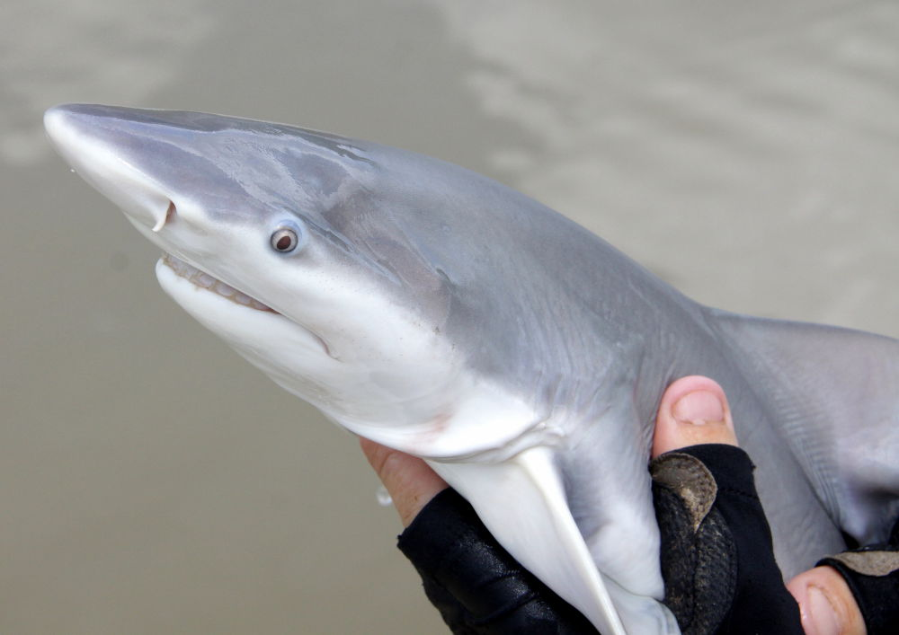

Proyecto
el tiburon Glyphis

Glyphis es un género de tiburones carcarriniformes llamados
vulgarmente tiburones de agua dulce. Son especies de tiburones
raras, difícilmente observadas, que por este hecho y lo oculto de
su hábitat , se encuentra normalmente en ríos, lagos y también arroyos,
pero las especies conocidas están documentadas en partes del sur y el sudeste
asiático y Nicaragua sus ataques hacia personas son muy poco recurrente
eso los hace muy poco conocidos.
investigaciones